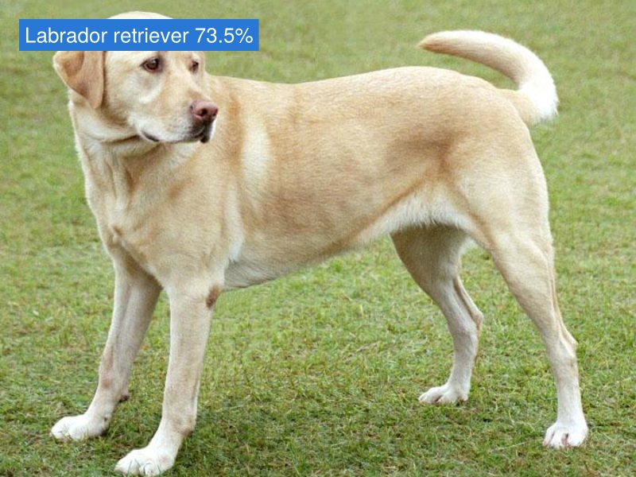
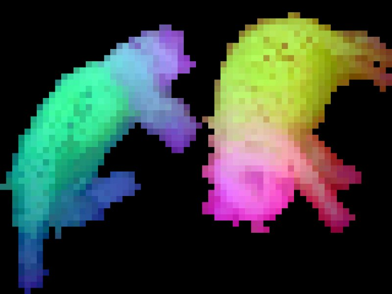
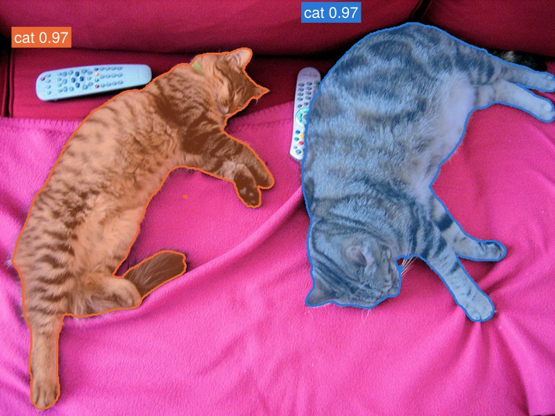

Metalhead
Metalhead.jl brings pretrained models from the Hugging Face Hub to Flux.jl, in pure Julia: about 300 vision models from timm; the language models Llama, Qwen, Gemma 3 and Granite, the vision-language models Qwen3.5 and Qwen3.8, the text encoders BERT, XLM-RoBERTa and ModernBERT, the image-text encoders CLIP, SigLIP and SigLIP 2 and the segmentation model SAM 3 from transformers; and the text-to-image pipelines FLUX.2 [klein] and Z-Image-Turbo from diffusers. FLUX.2 [klein] also edits images.
 |  |  | |
|---|---|---|---|
| Classify images with timm's models | Extract features for new tasks: DINOv2's patches | Segment the objects a prompt names, with SAM 3 | Generate and edit images from text with FLUX.2 [klein] |
- Pure Julia. Each model is a port of the PyTorch original to Julia, built from Flux layers, and so is everything around it: downloading the weights from the Hub, preparing images, decoding masks, the sampling loop of a diffusion pipeline. Neither PyTorch nor Python is involved, except to tokenize text: the tokenizers of text models come from HuggingFaceTokenizers.jl, which calls Hugging Face's tokenizers library through Python.
- Ordinary Flux models. A model is a Flux model like any other: differentiable, ready for inference or fine-tuning, on the CPU or a GPU, and its fields have the names of the PyTorch submodules.
- Any Hub checkpoint.
create_modeldownloads a repository's configuration and safetensors weights, and builds its architecture;create_processorloads the processor of the same repository, which turns images, text and boxes into the inputs of the model, and its outputs back into results. - Validated against PyTorch. A small, randomly initialised version of each architecture matches PyTorch's float64 outputs to a relative error of 1e-8, in CI and without Python; real checkpoints match to 1e-4 in float32 (1e-3 after the denoising steps of FLUX.2); weights load by name, strictly. The processors match those of the Python libraries too, bit for bit on 8-bit images.
Installation
Metalhead.jl requires Julia 1.10 or later. Install it from the Julia package manager:
julia> ]add MetalheadQuick tour
Classify an image:
using Metalhead, Flux, FileIO, ImageCore
model = create_model("timm/convnext_tiny.fb_in1k") # with its pretrained weights
transform = create_processor("timm/convnext_tiny.fb_in1k") # timm's eval transform
x = transform(load("dog.jpg")) # 224 × 224 × 3 × 1: width × height × channels × batch
probs = softmax(model(x)) # 1000 × 1Continue a text, with the tokenizer of the repository, which HuggingFaceTokenizers.jl runs:
import HuggingFaceTokenizers as HFT
model = create_model("HuggingFaceTB/SmolLM2-135M")
tok = create_processor("HuggingFaceTB/SmolLM2-135M")
logits = model(tok("The capital of France is the city of"))
HFT.decode(tok, argmax(logits[:, end])) # " Paris"Embed queries and documents, to retrieve the documents that answer a query:
model = create_model("Qwen/Qwen3-Embedding-0.6B") # a sentence-transformers model
queries = encode_query(model, ["What is the capital of China?", "Explain gravity"])
documents = encode_document(model, ["The capital of China is Beijing.",
"Gravity is a force that attracts two bodies towards each other."])
similarity(model, queries, documents) # 2 × 2: [0.76 0.16; 0.14 0.59]Segment the objects that a text names:
model = create_model("unsloth/sam3.1")
proc = create_processor("unsloth/sam3.1")
inputs = proc(; images = load("cats.jpg"), text = "a cat")
objects = only(post_process_instance_segmentation(proc, model(inputs); threshold = 0.5,
target_sizes = inputs.original_sizes)) # the scores, boxes and masks of the catsGenerate an image on a GPU, and edit it:
using CUDA, cuDNN
pipe = gpu(create_model("black-forest-labs/FLUX.2-klein-4B"; eltype = BFloat16))
image = pipe("A photo of a red fox sitting in fresh snow"; num_inference_steps = 4)
save("fox.png", Metalhead.image_matrix(cpu(image))[1])
edited = pipe("Make it night, under the northern lights"; image = load("fox.png"),
num_inference_steps = 4)The getting started guide explains models, processors and the feature interface, and the tutorials cover vision models, language models, vision-language models, segmentation, zero-shot classification, text-to-image generation and text embeddings.
Models
| Library | Ported families |
|---|---|
| timm | ResNet, ResNeXt, Wide ResNet, SE- and ECA-ResNet, Res2Net, ConvNeXt, DenseNet, VGG, Inception, Inception-ResNet, Xception, EfficientNet and EfficientNetV2, MobileNetV1 to V4, MNASNet, MixNet, FBNet, LCNet, ConvMixer, MLP-Mixer, ResMLP, gMLP, and ViT with the image encoders of DINOv2, CLIP and SigLIP |
| transformers | Llama, Qwen2, Qwen3 and Qwen3 MoE, Gemma 3, and Granite, with its mixtures of experts and the Granite 4.0 models without Mamba layers; Qwen3.5, Qwen3.5 MoE (Qwen3.6) and Qwen3.8, vision-language models; BERT, XLM-RoBERTa and ModernBERT, text encoders of embedding models (MiniLM, BGE, E5, GTE), rerankers and masked language models; CLIP, SigLIP and SigLIP 2, image-text dual encoders for zero-shot classification and retrieval; SAM 3 and SAM 3.1, which segment the objects that a prompt describes |
| diffusers | FLUX.2 [klein] and Z-Image (Turbo): the text-to-image pipelines, their transformers and their autoencoders; FLUX.2 [klein] also edits images |
| sentence-transformers | Text embeddings: the pooling, projections, normalization and prompts of a repository's modules.json, over the transformers models, such as Qwen3-Embedding |
The list of models gives each architecture of these families and the Hub checkpoints whose outputs were compared with PyTorch's. Other Hub repositories of the same architectures load too. From Julia:
list_models() # the ported architectures
list_models(; pretrained = true) # the validated checkpoints
list_models(; byfamily = true)["resnet"] # the architectures of a familyMetalhead ports what a checkpoint determines, such as its preprocessing, but not the general-purpose machinery of the Python libraries: see its scope.
Contributing
New models are ported with the tools in porting/ and a Claude Code skill that takes an agent through a port and its validation. See Porting a model.
Upgrading from Metalhead 0.9
Metalhead 0.10 deprecates the hand-written models (ResNet(50), ViT(:base), ...), the Metalhead.Layers module and pretrain = true. They will be removed in 0.11. The migration guide gives the create_model equivalent of each model.
Acknowledgements
Metalhead's ports translate the code of three Hugging Face libraries, and its tests compare against their outputs: timm (PyTorch Image Models), by Ross Wightman and the Hugging Face team, and transformers and diffusers, by the Hugging Face team and their contributors. The pretrained weights and their configurations are those of the Hub repositories, published by timm or by each model's authors, and keep the license of their repository.
Porting models with AI agents, loading the Hub weights by name and checking the result against PyTorch, follows Luximm.jl by Carroll Vance, which does the same for timm in Lux.jl.
Before the ports, Metalhead was a collection of hand-written Flux models. Mike Innes started it in 2018, with Avik Pal, and Dhairya Gandhi and Kyle Daruwalla maintained it through the following years. Abhirath Anand wrote most of the models and layers of Metalhead 0.9, and Brian Chen kept its tests running on CPUs and GPUs. Carlo Lucibello ported the pretrained weights of torchvision to the Hugging Face Hub in 2023, has maintained Metalhead since, and rebuilt it around ports of Hub models in Metalhead 0.10. Many other contributors added models, fixes and documentation.